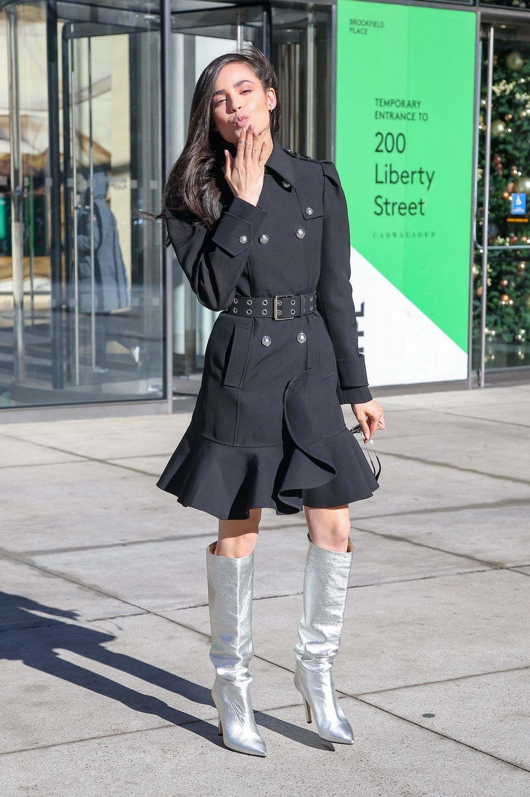
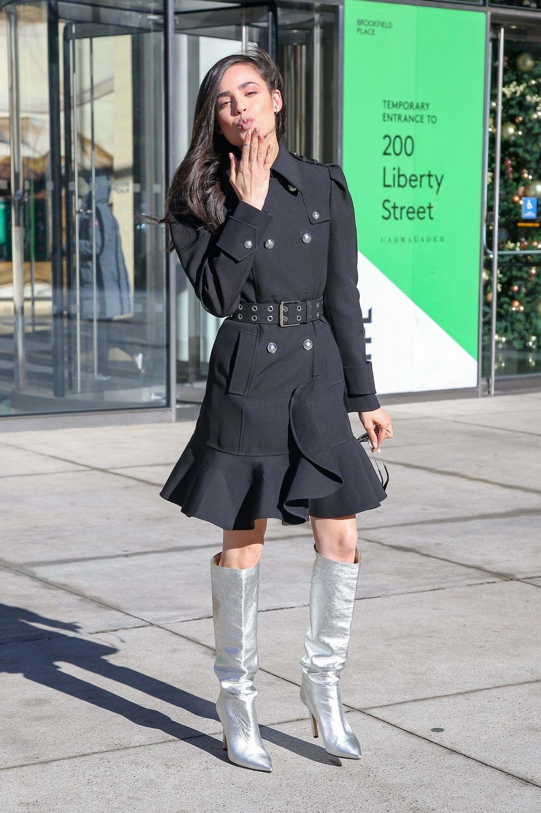
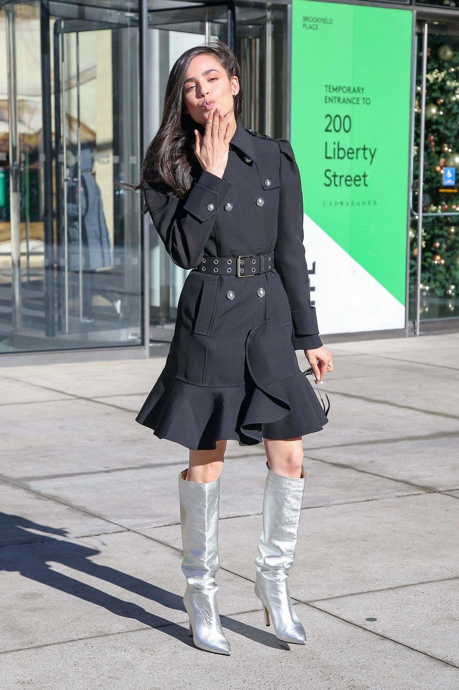
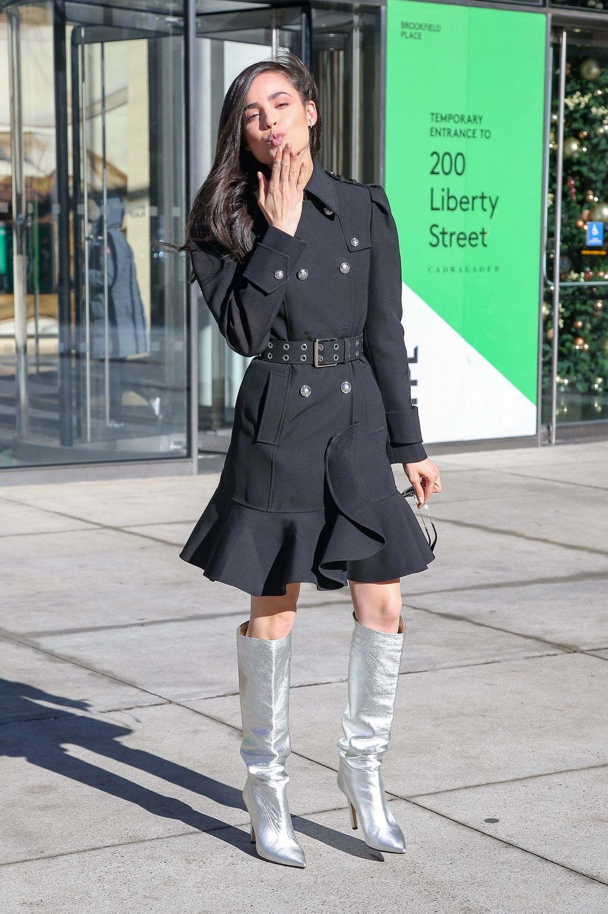

Sofía Daccarett Char (born April 10, 1993), known professionally as Sofia Carson, is an American actress and singer. Her first appearance on television was as a guest star on the Disney Channel series Austin & Ally. In 2015, she appeared as Evie, the daughter of the Evil Queen, in the Disney Channel Original Movie Descendants, and later reprised her role in Descendants 2 and Descendants 3. In 2016, she appeared as Lola Perez in Adventures in Babysitting, Melanie Sanchez in Tini: The Movie, and Tessa in A Cinderella Story: If the Shoe Fits. In 2019, Carson starred as Ava Jalali in the Freeform drama series Pretty Little Liars: The Perfectionists. In June 2020, she starred in the Netflix film Feel the Beat. Sofia made her singing debut in 2015 with the soundtrack album Descendants, and in the same year released the single "Rotten to the Core". In 2016, she signed to Hollywood Records, and released her debut single, "Love Is the Name". Sofia was born in Fort Lauderdale, Florida, to José F. Daccarett and Laura Char Carson, who both moved to Florida from Colombia. She chose the artistic name "Carson" after her American maternal grandmother, Lauraine Carson. Through her mother, Sofia is related to the Char family of Colombian politicians.